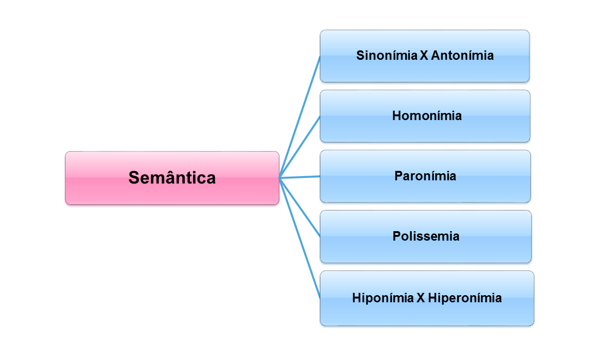

Uso de Semântica
Que significa semântica? Porque isso é tão importante em HTML5?
LINGUÍSTICAS
Sicrônico
Dicrônico
Relação de duas ou mais palavras que possuem significados iguais ou semelhantes
Figuras de linguagem em que há o emprego de palavras com um sentido conotativo ou figurado
HTML Semântico
Explicitar suas informações para o Computador.
Facilitando o entendimento de leitores
A Semântica HTML é importante para a indexação por mecanismos de busca
As tags semânticas permitem que os mecanismos de busca identifiquem facilmente o título da página
Semântica

Semântica
Semântica